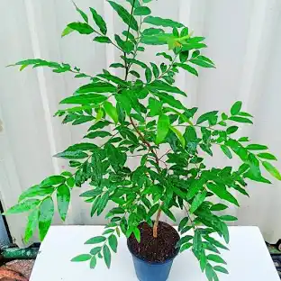

Putrajiva Tree (Putranjiva roxburghii)
Scientific Name: Putranjiva roxburghii
Description: The Putrajiva Tree is a slow-growing, evergreen tree native to the Indian subcontinent and Southeast Asia. It has dark green, shiny leaves and produces small yellowish flowers. The tree is best known for its hard seeds, which are often strung into necklaces believed to promote fertility. In landscapes, it’s valued for its dense foliage, which makes it an excellent option for hedges or shade.
Care Tips:
- Water: Requires regular watering when young. Once established, it becomes drought-tolerant.
- Light: Grows best in full sunlight but can tolerate partial shade.
- Temperature: Prefers warm climates and can withstand tropical conditions.
- Soil: Thrives in well-drained loamy or sandy soil. Avoid waterlogged areas.
Medicinal Uses:
The Putrajiva Tree has a prominent place in traditional Indian medicine. Its name literally means “life-giver to sons” in Sanskrit, and it is believed to aid fertility. The seeds are used in religious rituals and worn as protective charms. Medicinally, extracts from the seeds, bark, and leaves are used for treating fever, rheumatism, and as an anti-inflammatory agent. However, internal use should be guided by professionals due to the potency of its bioactive compounds.